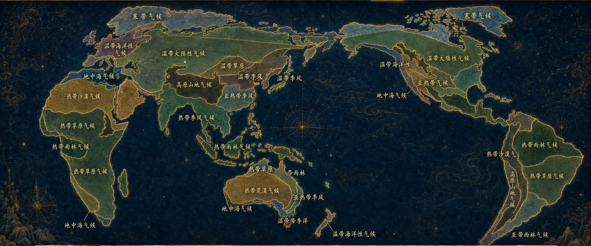

将光标悬停于
地图之上
地图之上
探索27位
气候之灵
气候之灵
气候万象志
悬停·点击
阅读每一缕风
阅读每一缕风
9大家族 × 27位灵性存在
大地之母 · 气候之灵
大地之母 · 气候之灵
— 凝望整棵世界树 —
将光标悬停于谱系之上
阅读气候之灵的血脉
CLIMATERIA
谱 系
从何而来
CLIMATERIA · 罗盘
温度带 · 气候之灵的星盘
温度带 · 气候之灵的星盘
— 凝望温度的秩序 —
×
×
×
将光标悬停于星盘之上
探索气候的温度秩序
CLIMATERIA
罗 盘
温度的秩序
ACT I
冷暖的约定
The Pact of Warmth and Cold
1 / 16